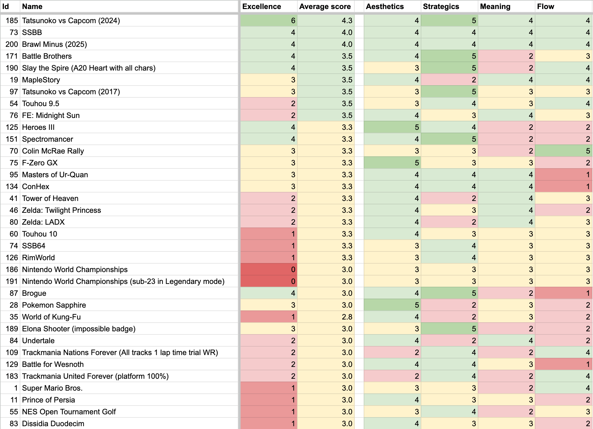

I thought I'd share something I made: a new scale for ranking games! I keep forgetting about fantastic games when asked for recommendations, and wanted a systematic way of finding the very best games I know of. The system has two main goals: to highlight important areas not usually covered by game ratings, and do it in a data-centric way so others can verify and debate the results. The scale I ended up on has four axis:
- Aesthetics (= how beautiful the game is in terms of sensory pleasure; visuals, audio, haptics, etc.)
- Strategics (= elegance and impact of strategic decisions that the player makes, and how difficult it is to develop heuristics)
- Meaning (= how effectively the story and experience leave a lasting impression, and whether it made my life better in some way)
- Flow (= how easy and enjoyable is it to stay focused, without the game becoming frustrating or addictive)
Each area is very strictly scored from 1-5, determining how much the game specialized in that area:
- 1: Average. "Not bad; might even be good but doesn't inspire awe."
- 2: Very good, significant effort is clear. "80/100 or higher on a regular scale."
- 3: Phenomenal, stands out from competition. "Leaves a lasting impression that shines within its genre."
- 4: Exceptional, even among games that specifically focus on the area. "As good as I could possibly imagine."
- 5: Masterpiece, something unique and amazing that no other game has. "Better than anything I could imagine."
Then I spent half a year listing and rating every single game that I've ever thought was amazing at the time of playing - just over 200 titles in total. This resulted in two rankings: an overall rating with a simple average, and an "excellence" rating where any category with a 4 earns the title one point and a 5 earns it three. Here are the results!
https://docs.google.com/spreadsheets/d/1F4YD96O9AqIV5VyzMBJMaucU5oabFes_vnQMFUSaIKM/edit?usp=sharing

Some reflections:
It was interesting to find that Ocarina of Time and FF7 only had an average of 2.0, despite widely being seen as the best games of all time. I feel like this scale provides a more balanced look at the experience, since aesthetics and flow are only half of the score. The requirement for elegance and non-heuristic decisions for strategics also exposes bad design in strategy games very well.
To clarify, with meaning I'm not talking about how big of a splash the game made in the gaming community or anything like that. I specifically mean, how quickly can the game deliver experiences that leave a lasting impression and/or make the player's life better in some way. The ideal game for me in terms of meaning is a positively transformative experience for a significant portion of players - and manages to do so in less than an hour of play time.
For example, I love many aspects of Zelda games, but one can't help but admit that the stories and characters are pretty one-dimensional, and the plot twists kinda predictable. My favorites in this regard are Zelda: TP and MM, as the slightly more mature tone suits the series very well in my opinion. Even then, the 30h+ playtime means that the games are utterly ineffective at delivering their message in a succinct manner. Meaning is my strictest criteria - only one game ever has scored a five (Passage).
In general, I feel like games as an art medium would be better off if more designers put additional weight on strategics, meaning, and flow. Managing to push the boundaries in these areas is relatively rare and always strikes me as phenomenal. That being said, I do have to admit that aesthetics tend to drive more sales on average.
The list is not perfect; first of all it's limited to games I've personally played, and I acknowledge that I do have some biases at play. In general, since most games are rated more than a year after playing them - and many a decade or more later - I expect that the ratings are somewhat objective. However, I do find that 3D graphics feel more "dated" to me in some cases compared to 2D. I suppose this is because the state of the art has been pushed much further in the former compared to the latter. I do compensate for it thanks to nostalgia towards the 1990s though, and in general I don't think slight personal bias makes the rating system itself any less valuable.
Overall this was a super fun exercise to do, and highlighted many hidden gems that I had almost forgotten over the years! Curious to hear if people have any thoughts about the scale or its results.
A coworker keeps asking me how one is able to become so good at so many different types of games. It is an interesting question, and I have spent considerable time pondering it. There are too many things to say about this topic, but one also has to start somewhere. Thus I thought it might be useful to express how I personally think about skill and mastery in broad strokes and at a high level, without diving deeper into individual topics. I'll try my best to summarize several of the most important concepts.
Goals drive behavior
Many people think of improvement in terms of experience: the more someone plays a game, the better they get at it. However, things are not so simple: different players need vastly different amounts of time to reach specific levels of play. Many players also feel that they can never progress beyond their current level, no matter how much they play. To give a concrete example, some people reach the rank of 10-kyu in Go within a hundred games; others may play thousands of games yet never attain it. However, 10-kyu is not a particularly high rank: almost anybody is capable of reaching it with a directed effort and proper guidance.
This hints at our first concept: goals drive behavior. If a player's goal is to merely spend time with routine moves in Go and they have no intention to improve, it is very unlikely they will get better anytime soon. If a player's goal is to reach a 10-kyu rank within a hundred games, they will view the game in a very different light. They will be much more introspective and reflective towards themselves; much more thoughtful and flexible towards their ideas.
On the other hand, focusing on improvement also requires a lot more focus, and is much more stressful than just relaxing with a game. The motivation behind improvement can also be unclear until one tastes the sweet nectar of mastery and feels the joy of pushing beyond their limits. Since many players don't make the connection between improvement and such experiences, a lot of players will default to a semi-passive attitude towards studying a game. If you don't put in a directed effort yet feel like you're not winning enough, the first thing is to decide whether you want to improve at the game. Players like this need to answer "Why?" they even play the game in the first place - what about it is engaging to them? If it is the excitement of skillful play or the rush of winning, surely they have something to gain by becoming better at it.
Asking "Why?" is a great way to determine a goal for yourself. However, where do you start making progress towards it?
Turning goals into actions
Imagine two players, let's call them A and B, independently learning how to play a 1-vs-1 game better. Player A's goal is to "win every game", while player B's goal is to "learn a defensive technique that has been shown to improve win rate". After both players spend some time studying the game and have an epic duel, who is more likely to win?
I think in a lot of cases, it would be player B. Their progress may be slower at first, as they need to spend time practicing the technique and implementing it in their play. However, as time passes and their mastery over the technique improves, I think they will start winning more than player A. This is because A's goal is not actionable. Winning every game is a fine objective or standard to hold yourself against, but saying that "I'm going to learn how to win every game" with no further breakdown won't provide the steps needed for taking concrete actions.
In order to find an interesting goal you need to ask "Why?" from yourself, but you almost always need to break it down by asking "How?" as well. "How are you going to win every game?" "Well, I'm going to take less damage than the opponent." "How will you do that?" "Well, I'll need to get hit fewer times than they will." "How will you do that?" "Well, I'll count the number of times each of us takes hits, and use those numbers to decide if I need to focus on improving my offense or my defense." "How would you improve your defense?" "I'd look up information about what's considered to be the most relevant defensive technique, then spend an hour every day practicing it."
Before you notice it, the scope of practice needed to make progress on "winning every game" is pretty much reduced to the goal of player B, to "learn a defensive technique that has been shown to improve win rate". However, by going through this chain of thinking, the player has now realized a connection between specific techniques and their potential effects on win rate.
They can start seeking ways to gain more advantage over other players. They may start reading up about how other players have improved at the game in the past, or seek coaching from more skilled players. They will generate lots of ideas on different things to try, and come up with practice regimes for gaining the skills needed to perform specific techniques.
However, it's easy to generate more ideas than you have time to try. This makes prioritization of the ideas important, and is where the next concept comes in.
Learning from your losses
A lot of players, when facing a lost match they simply hit "next" and move on without much thinking. I think this is one of the greatest tragedies in gaming; every single time it happens presents a huge missed opportunity.
Getting into the habit of identifying the reason you lost is extremely useful. Not only do you start to see patterns in the losses, it becomes possible to estimate how beneficial your improvement ideas are for improving your personal win rate. Then you can estimate the amount of time needed to learn a technique or a shift in thinking, and find out how cost-effective each idea really is. Then it's simply a matter of picking the most cost-effective techniques and off you go, maximal improvement in minimal amount of time!
If only things were so simple. There are a lot of confounding factors and complex effects. It's difficult to make optimal decisions, for a number of reasons:
- A niche technique can be beneficial in the short term, but become a bad habit later.
- New techniques can dilute your strengths until fully integrated - which can take months or even years.
- The speed of learning depends on how many similar skills you already have. Every new skill affects all others.
- The more techniques you need to keep in mind, the worse your reaction speed becomes.
- Some skills may have an unknown/random component: you don't know how much experimentation is needed to apply them.
- Many skills have different properties depending on the character/stage/playing style/opponent, etc.
Since your unique set of skills and weaknesses affect so many factors of the learning process, I made some rough guidelines:
1. Focus on the fundamentals. Almost every competitive game has some dynamics that occur repeatedly in a match, and learning these forms the basis of proper play. Often it is about accomplishing a momentary objective faster or with fewer actions. Things like smooth movement, optimal economy growth, advantageous positioning, and rock-paper-scissors dynamics tend to fall under this. Some games have a single mechanic with massive impact on win rates (like doubling in Backgammon). It's surprisingly hard to correctly identify the fundamentals, so seeking the guidance of the game's experts is highly recommended.
2. Focus on the factor that has the biggest effect on win rate. If you can identify a single area that is solely responsible for a large percentage of your losses, fixing that is probably better than anything else you could be spending time on. After fixing it, odds are high that another problem will now be dominating your mistakes. By working through the biggest problems one-by-one, you will gradually build a well-balanced and robust skillset. Semi-professional and professional players have such nuanced control over a game that no single improvement can shift their win rates by over 10%, but this is a reliable guideline until you reach that level.
3. Hone your ability to accurately estimate the cost and benefit. Even if you know what to improve, it's no use if the how is ineffective. Learning a niche technique that is super effective 1% of the time is usually a waste of time compared to something you can utilize in every match. Similarly, doing a drill over and over is useless if you don't learn how to apply the skill in a real match. In order to make optimal decisions regarding priorities, your prioritization needs to be on spot, which means your guesstimates need to be good enough. You need to have an accurate view on what are the game's fundamentals and how are they affecting your win rate. Getting the error margins down, comparing estimates with actuals, and finding your biases and overconfident areas is important. Tracking the time needed to learn a skill, how long it takes to integrate into muscle memory or playstyle, and its actual effect on win rate can all be useful. Making mistakes in a match will lose you a game, but making mistakes in your prioritization will lose every future game as well.
Once a player decides that they truly want to improve, they can approach games with a very different mentality. Win rate starts mattering a lot less in the short term, because they know that following their priorities will eventually get them to mastery. Similarly, winning right now is rarely as important as winning the most important match you'll ever play. That match is almost always in the future, so becoming a better version of yourself is more relevant than what's right in front of you. If you can learn something concrete from every single game along the way, you're already positioned to do better than 99% of the players.
Following this advice will lead to challenges. There will be frustrating losses when experimenting with new techniques. There can even be plateaus, where you feel like nothing you do can help you improve. But there always are mistakes, there always is room to improve. Nobody ever plays an interesting game 100% perfectly. You may not always see your mistakes on your own, but you can always seek the help of people who can point them out. This mutual teaching forms the basis of communities that organize themselves around competitive play, and can evolve into beautiful friendships and rivalries.
Over time, you may even start developing a general sense for mastery, a set of meta-strategic skills that allow you to learn any game in the minimum amount of time required. Once that happens, I can guarantee that you'll be seeing games themselves in a new light, be able to explore their deepest depths, and enjoy competition a whole lot more. After all, who can resist the allure of victory?
Slipways and AtS both seem very promising in delivering meaningful strategic decisions, but (despite being fantastic games) they ultimately fall short of my ideal in that regard. Compared to Slipways, in AtS I like that you get bonuses for pushing your luck and truly have multiple wincons. Having all wincons contribute to the same stat is also interesting: switching approaches mid-run doesn't mean throwing away all your progress.
However, it still feels overly complex: having to learn and track the upgrade tree and seal missions detracts from the new player experience, and the differences between runs are typically not great enough to force the player out of heuristic decision-making. Worst of all, it still feels like a slog to go through, with some runs lasting over an hour and punishment waiting at every corner. It's not a pleasant experience - and the game makes this expectation clear - but it's clearly lacking the _joy_ that designers of incremental and Nintendo games so deeply understand.
I'm certain the format is possible to squeeze into an exciting 15-minute mobile game, but this is not the way to go. Tacking on a city builder "frontend" on top of the number-driven mechanics presents many of the same fundamental problems that made me dislike EU4. I want to play something where _every_ decision is meaningful, precise, and optimizable, not something where the "interface" to the underlying mechanics is so lossy that the designers are forced to provide tons of leeway.
I should also mention the low initial skill ceiling from artificially locked difficulty. StS and RoR don't need level-up unlocks, but it's absolutely essential for hiding the "unnecessary" complexity of AtS. Thankfully the difficulties ramp up quickly, but the stakes are too high to fully enjoy them: one failed run can erase hours of progress. Initially I liked pushing my luck in this Majora's Mask esque setting, but it quickly became frustrating as I find myself picking easier difficulties in order to quickly progress through the seals. Even then Viceroy difficulty feels way too easy, but the game really doesn't want me to challenge myself with prestige runs before unlocking all the content.
I'm sure I'll discover a lot of things about myself when I eventually venture into the higher difficulties, but given the time investment I'm not sure if I want to. In general, I'm a fan of taking time to ponder a difficult decision; relishing in the anguish of tradeoffs. I love the cornerstone and order decisions (and they are very similar to Alignment is Hard's core gameplay loop), but everything else feels like filler. Especially the real-time nature of AtS detracts from this: if Slipways was able to deliver the premise even slightly more elegantly, my ideal game would exist.
Since I haven't found a game that truly reaches that ideal, I shall continue the development for Alignment is Hard. However, I find it far more joyful to discover that someone else has already created the game I want to play: contact me if you know of a project that does things better!
Glossary:
- AtS = Against the Storm
- EU4 = Europa Universalis 4
- StS = Slay the Spire
- RoR = Risk of Rain
- wincon = victory condition
- meaningful strategic decision = decision between 2-4 options with very asymmetric benefits/drawbacks, which force a different playstyle if picked, which are balanced enough that the player can't have an obvious/heuristic choice, but which are unbalanced enough that there's at least one clear mistake compared to the optimal choice given perfect play (Slay the Spire and Elona Shooter do this the best. I should write a separate post about the topic, since I've been mulling it for over two years.)